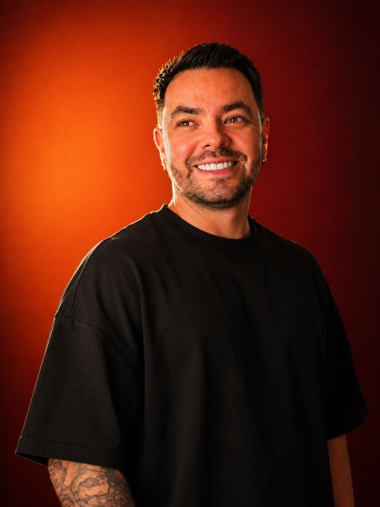

Edítalo con mi estilo: quita silencios y tomas repetidas, pon subtítulos dinámicos y escenas de papel con mi naranja.
Listo. Este es el plan:
1. Transcribir con tiempos por palabra
2. Detectar silencios y tomas repetidas
3. Cortar, animar y poner subtítulos
Le hablo como a mi editor. En español y sin palabras técnicas.
Whisper transcribe palabra por palabra. Cada toma se analiza por separado.
| TIEMPO | QUÉ | MOTIVO | ACCIÓN |
|---|---|---|---|
| 00:02.3 | "ehh, creo que…" | Muletilla | CORTAR |
| 00:04.1 | [pausa] | Silencio | CORTAR |
| 00:08.4 | Gancho, toma 1 | Se trabó | CORTAR |
| 00:12.6 | Gancho, toma 2 | Toma limpia | QUEDA |
| 00:31.8 | [pausa] | Silencio | CORTAR |
| 00:52.0 | "Comenta TALLER" | Cierre | QUEDA |
Se queda con la última toma limpia de cada frase. Tú apruebas cada corte.
Súbelos como reels de prueba y quédate con el que gane.
# editor_de_reels
Eres mi editor de video corto.
Meta: reel vertical 1080x1920.
1. Transcribe con tiempos por palabra
2. Corta silencios, muletillas y tomas
repetidas
3. Muéstrame la lista de cortes primero
4. Subtítulos de máximo 3 palabras
5. Escenas de papel con mi naranja
6. Escribe 3 ganchos y exporta
3 versionesNo te saltes el paso 3: revisa los cortes antes del render.